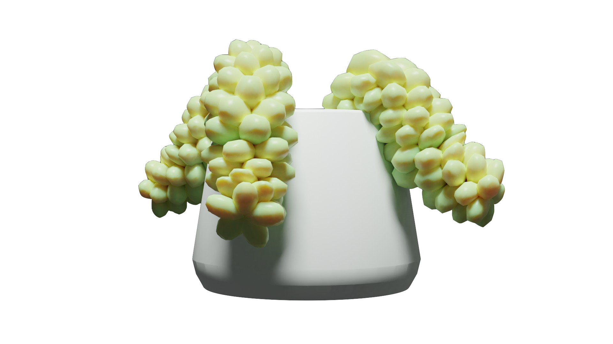
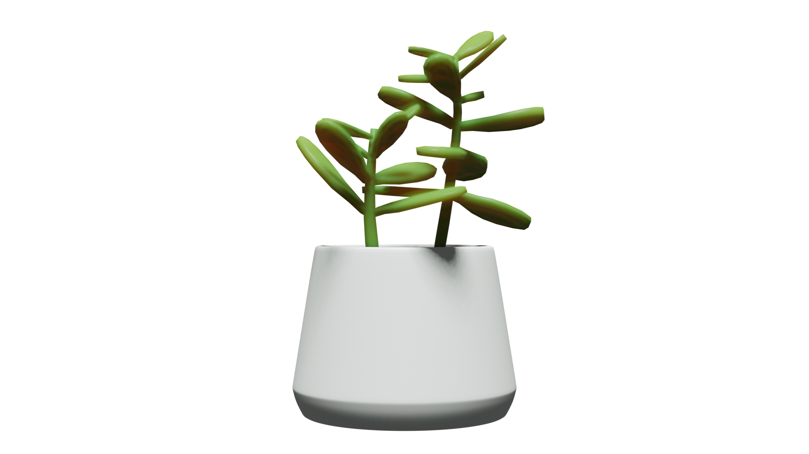
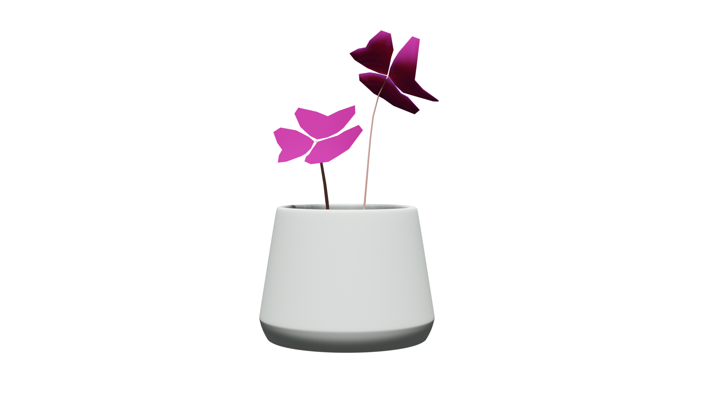
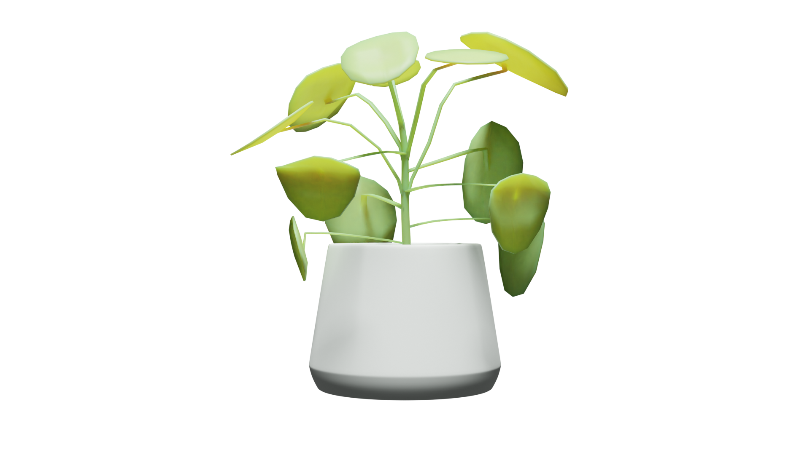

Burro's-Tails
Burro’s tail thrives indoors in a well-drained container where bright sunlight is on the plant. It is recommended to slowly introduce the plant to full sun once purchased to allow it to acclimate first, as light conditions vary from nursery to nursery, etc.
Care & Maintence
To care for your plant, provide even moisture and fertilize with cactus food during the growing season. Divide the plant when it gets too large for a container and transplant it every couple of years to give it fresh new soil.

Jade Plants
It is recommended that Jade plants get full sun in order to grow properly. If they do not have full sun, they may become stunted and leggy. Proper Temperature for Jade Plants Jade plant care instructions say that jade plants do best in day time temperatures of 65-75 F. (18-24 C.) during the day and 50-55 F. (10-13 C.) at night.
Care & Maintence
Do not let a jade plant dry out completely. However, be sure to not water a jade plant too often, as this can cause root rot. If your jade plant is losing leaves or has leaf spots, this is most commonly caused by too little water.

Oxalis Plants
The Oxalis plant thrives in bright indirect to bright direct light. It can handle a few hours of direct sun.

Care & Maintence
Oxalis needs watering every 1-2 weeks, allowing soil to dry out halfway down between waterings. Expect to water the plant more often in brighter light and less often in lower light. Generally, 65°F-85°F (18°C-30°C). It’s best not to let it go below 60°F (15°C).

Ivy Plants
Devil’s ivy can thrive in both bright sunlight or dim lighting inside your home. The only lighting conditions it can’t tolerate are full, direct sun and complete darkness. If exposed to bright, filtered light, your devil’s ivy will have more yellow variegation in its leaves.
Care & Maintence
The root system of pothos plants is rather shallow, so only a little watering is needed to penetrate the roots. Water it as often as needed during the growing months of spring and summer. Just avoid soaking the soil completely and the plant should be fine. For soil, a standard houseplant potting mix would do your devil's ivy well. It is recommended that it should be well-draining, but holds on to enough water to remain moist in between watering (devil’s ivy doesn’t like super dry soil).

Chinese Money Plant
Light-wise, the best situation for a Chinese money plant is bright light, with no direct sunlight. Direct sun scorches leaves, and light shade may encourage larger leaves.

Care & Maintence
The Chinese money plant prefers a well-draining potting soil, and a pot with drainage holes is necessary. The soil needs to mostly dry out between waterings, with more watering required in warmer, sunnier weather. If the leaves start to look slightly droopy, it’s a sign that the plant needs water.